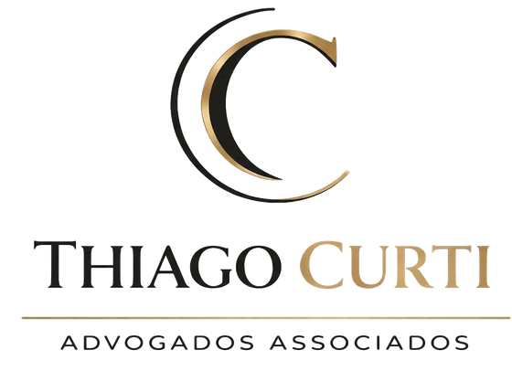

Processos no CRM
Sindicâncias e processos ético-profissionais acompanhados desde a primeira notificação, com defesa técnica em todas as fases, inclusive recursos ao Conselho Federal de Medicina.
Saiba mais sobre processos no crmAdvocacia dedicada ao médico
Notificação do CRM, reclamação de paciente, publicidade nas redes sociais ou um contrato para assinar: cada situação tem regras e prazos próprios. Defesa e assessoria jurídica para médicos, clínicas e consultórios, com discrição e acompanhamento em cada etapa.
Áreas de atuação
Cada situação tem regra, prazo e estratégia próprios. Veja como funciona a atuação em cada uma.
Sindicâncias e processos ético-profissionais acompanhados desde a primeira notificação, com defesa técnica em todas as fases, inclusive recursos ao Conselho Federal de Medicina.
Saiba mais sobre processos no crmDefesa em ações indenizatórias, notícias de crime e investigações que envolvam a atuação profissional do médico.
Saiba mais sobre responsabilidade civil e penalRevisão de perfis, campanhas e conteúdos de redes sociais à luz da Resolução CFM n.º 2.336/2023, para comunicar sem expor o registro profissional.
Saiba mais sobre publicidade médicaRevisão de prontuários, termos de consentimento livre e esclarecido e demais documentos do consultório, para que a rotina já produza a prova de que o atendimento foi correto.
Saiba mais sobre preventivo: prontuários, consentimentos e demais documentosContratos com hospitais, clínicas e operadoras, constituição de pessoa jurídica médica e acordos entre sócios.
Saiba mais sobre contratos e sociedades médicasAdequação de consultórios e clínicas à LGPD e às regras da telemedicina, com foco no sigilo dos dados de saúde.
Saiba mais sobre proteção de dados e telemedicina30diasprazo da defesa prévia no processo ético-profissional (artigo 43, parágrafo 1º, do Código de Processo Ético-Profissional)
Primeiros cuidados
O que se faz nos primeiros dias costuma acompanhar o caso até o fim. Antes de responder:

Sobre o advogado
Advogado inscrito na Ordem dos Advogados do Brasil, Seção do Paraná, sob o n.º 108.966, com escritório em Maringá. Dedica sua atuação ao Direito Médico e da Saúde, com foco na assessoria e na defesa de médicos, clínicas e consultórios.
O trabalho reúne o conhecimento das normas do Conselho Federal de Medicina, do Código de Ética Médica e da legislação civil, penal e de proteção de dados, com linguagem direta e acompanhamento próximo de cada etapa.
Também produz conteúdo informativo sobre a rotina jurídica da medicina no Instagram e no YouTube.
Artigos
A diferença entre sindicância e processo ético-profissional, os prazos que importam e os erros mais comuns na primeira resposta.
6 min de leitura
Antes e depois, selfies, preços de consulta e pós-graduação: o que passou a ser permitido e quais limites continuam valendo.
6 min de leitura
Em processos éticos e ações indenizatórias, o que está registrado costuma valer mais do que qualquer explicação posterior.
5 min de leitura
Dúvidas frequentes
A presença de advogado não é obrigatória, mas é recomendável. Os esclarecimentos prestados na sindicância passam a integrar o procedimento e podem ser usados nas fases seguintes. Uma manifestação técnica, apoiada no prontuário e nas normas do Conselho Federal de Medicina, é muitas vezes o que leva ao arquivamento logo no início.
Sim. O atendimento online é feito por Google Meet, com horário escolhido diretamente na agenda, o que permite orientar médicos de outras cidades. Também há atendimento presencial no escritório em Maringá.
Você escolhe o horário na agenda e informa, em poucas linhas, do que se trata. Na reunião, de até 45 minutos, a situação é analisada e os caminhos possíveis são explicados. Se houver contratação, a proposta de honorários é apresentada por escrito antes de qualquer providência.
A notificação ou citação recebida, com a data de recebimento, o prontuário completo do atendimento, os termos de consentimento, exames, prescrições e eventuais mensagens trocadas. Não é preciso enviar nada antes da reunião.
Sim. Tudo o que é relatado ao advogado está protegido pelo sigilo profissional. Ainda assim, recomenda-se não enviar por mensagem dados que identifiquem pacientes antes da reunião.
Sim. Além da defesa individual do médico, o escritório presta assessoria preventiva a clínicas e consultórios em contratos, publicidade, prontuário e proteção de dados.
Atendimento
O horário é marcado diretamente na agenda, e a confirmação chega por e-mail.
Reunião de até 45 minutos pelo Google Meet. O link chega por e-mail após a confirmação.
Escolher horário onlineReunião de até 45 minutos no escritório: R. Mem de Sá, 626, Zona 02, Maringá/PR, 87010-370.
Escolher horário presencialJanelas de 15 minutos para alinhamentos entre advogados, correspondentes e parceiros.
Agendar alinhamentoConte em poucas linhas o que está acontecendo. A mensagem segue para o WhatsApp do escritório, e o retorno é feito em horário comercial.